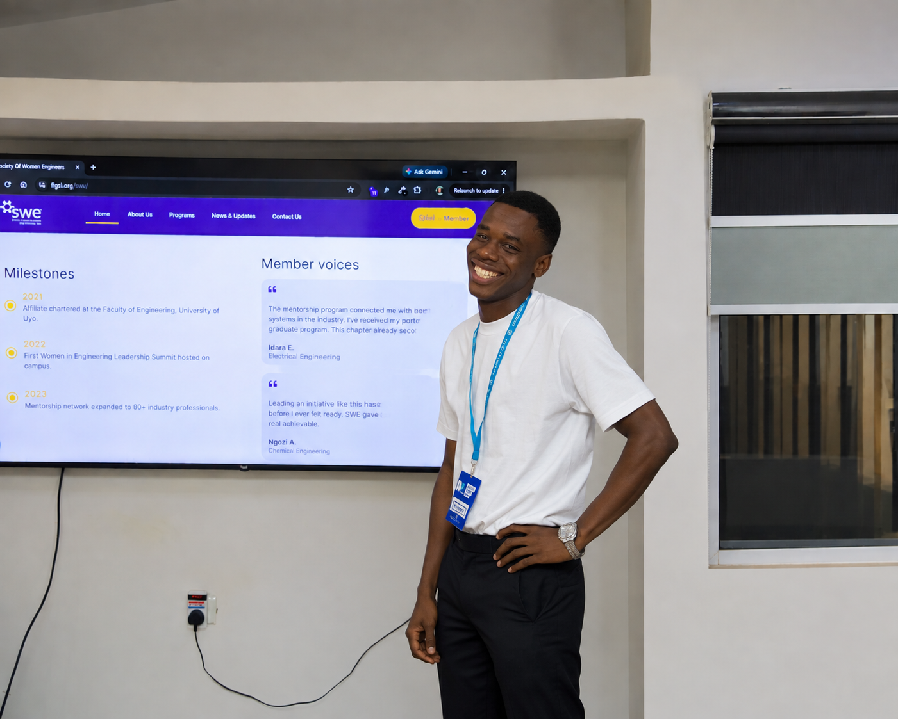

Frontend Development
Building clean and functional websites using HTML, CSS and JavaScript.
ABOUT ME
I'm a frontend developer passionate about creating clean, responsive and user-friendly websites. I enjoy turning ideas into interactive web experiences while continuously improving my skills through real projects.
Let's Work Together
WHAT I DO
Building clean and functional websites using HTML, CSS and JavaScript.
Creating simple, attractive and intuitive interfaces that are easy to use.
Making websites adapt smoothly to phones, tablets and desktop screens.
Exploring new technologies and challenging myself to become a better developer.
MY SKILLS
These are some of the technologies I've been working with as I continue developing my frontend skills.
MY JOURNEY
Began discovering how websites are built and developed an interest in frontend development.
Learned the fundamentals of HTML and CSS and started creating simple web pages while understanding how structure and styling work together.
Moved from learning the basics to building practical projects and gaining hands-on experience with frontend development.
CURRENTLY FOCUSED ON
I'm continuing to improve my JavaScript skills, build responsive websites, learn modern frontend technologies and turn more ideas into real projects.
I'm always interested in new projects and opportunities to learn, create and grow.
Contact Me